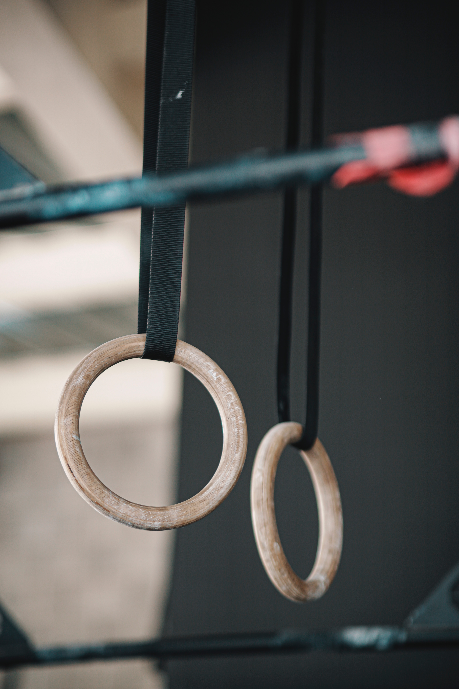
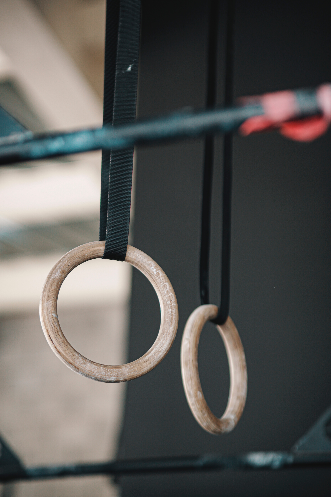

Mes Passions :
Bienvenue sur ma page passion ! Ici, vous allez retrouver la majorité de mes centres d'intérêt, notamment le sport et l'informatique.
Le Sport : En tant qu'amateur de sport, je trouve une source constante d'inspiration et de vitalité dans l'activité physique.
 

Explorez ma galerie sportive pour un aperçu de mes passions athlétiques. Des terrains de jeux aux moments de victoire, découvrez la diversité des sports qui rythment ma vie.
L'Informatique : L'informatique m'a séduit, et c'est principalement grâce au web que j'ai plongé dans cet univers fascinant. Des lignes de code aux technologies émergentes, chaque aspect de ce domaine m'attire, avec une passion particulière pour devenir un développeur web.
Depuis mes premiers pas dans le monde de l'informatique, j'ai été captivé par son immense potentiel et sa capacité à façonner l'avenir. Chaque ligne de code écrite est une exploration, chaque bug résolu est une victoire. Ma passion pour l'informatique m'a conduit à développer des compétences diverses, de la programmation à la résolution de problèmes complexes.
Aujourd'hui, mon regard est tourné vers l'avenir, avec une aspiration particulière pour le développement web. Je souhaite canaliser cette passion dans la création d'expériences en ligne captivantes. Mon objectif est de fusionner la créativité avec la puissance du code pour donner vie à des projets web innovants et esthétiquement agréables.
Design Responsif
Mon engagement envers une expérience utilisateur optimale est reflété dans le design responsive de mon site. Que vous le consultiez sur un ordinateur de bureau, une tablette ou un téléphone, chaque aspect a été soigneusement pensé pour s'adapter de manière fluide à différents écrans. La flexibilité du design garantit que vous pouvez explorer mon portfolio avec facilité, où que vous soyez, offrant une expérience homogène sur toutes les plateformes.